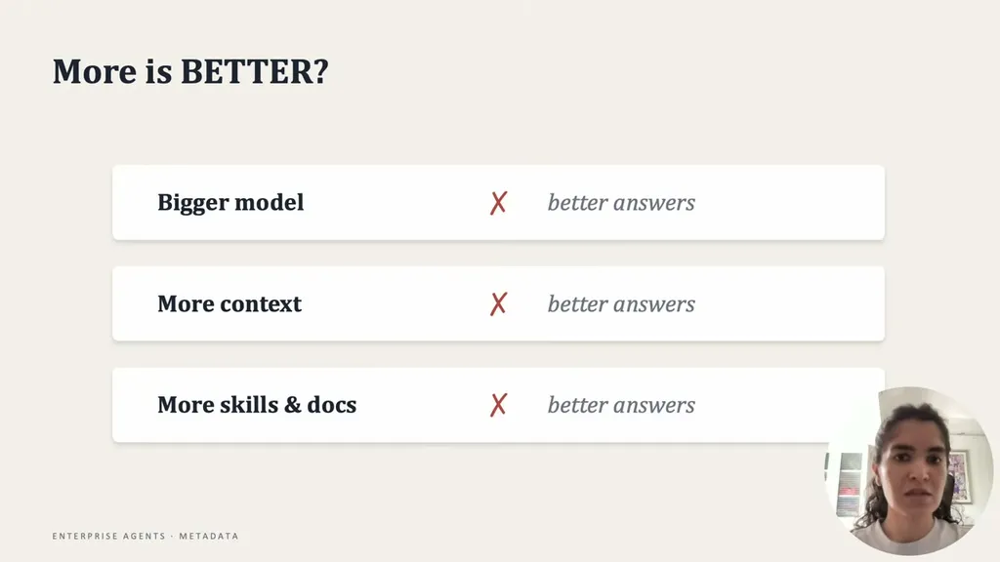
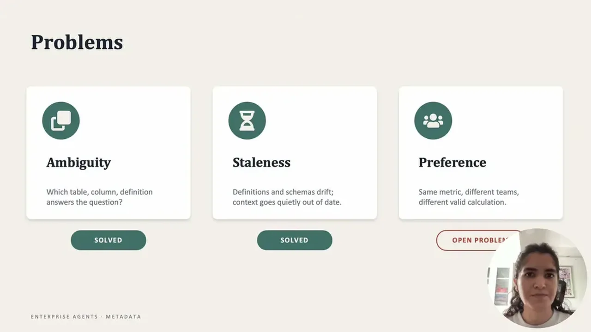
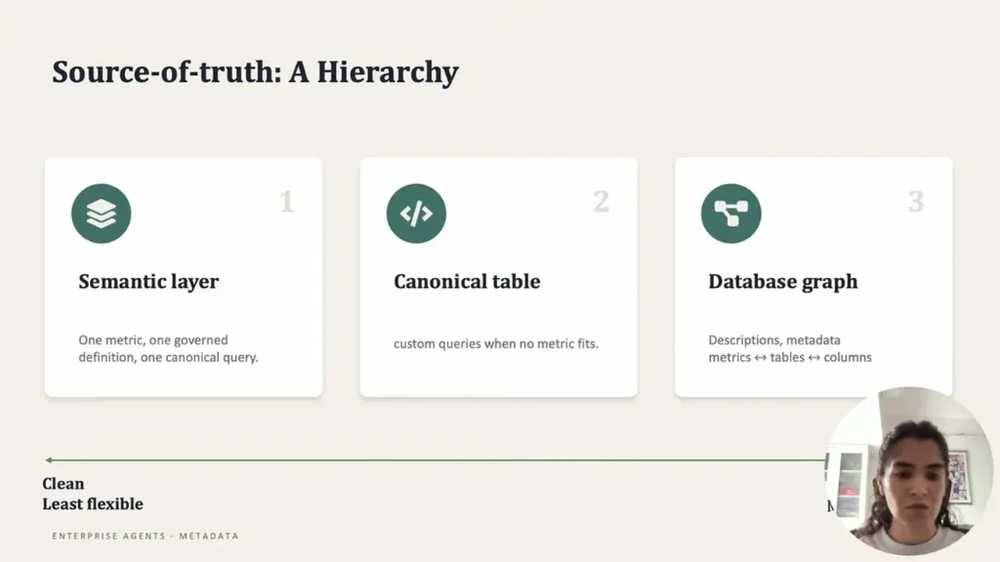
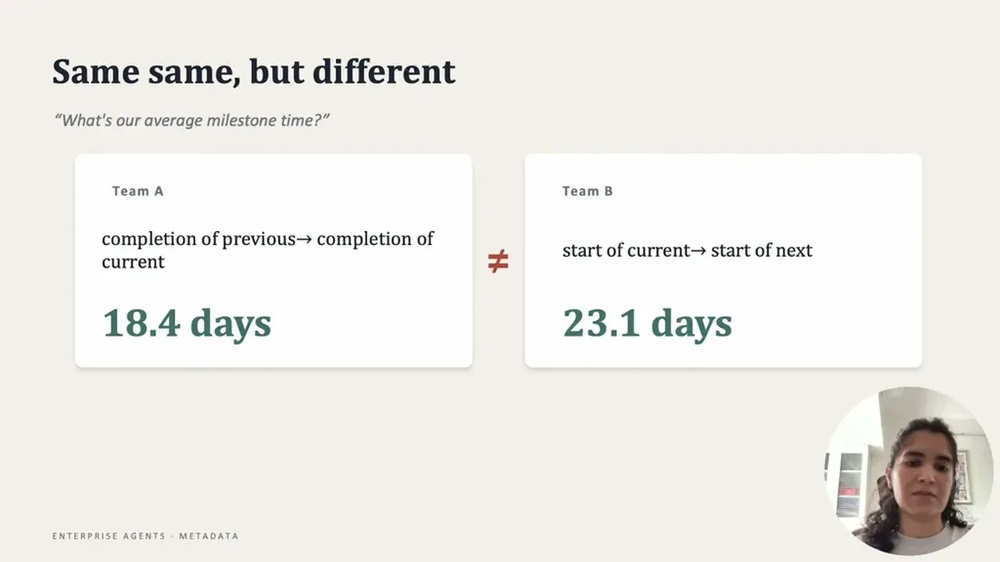

Daga says the instinctive fixes to a bad agent answer, a bigger model, more context, more knowledge-base files, don't address the real causes. She identifies three underlying problems: ambiguity about which data source is authoritative, staleness of context as definitions and processes change, and unresolved individual or team preference on how to calculate a metric.
“The agent actually has these three main problems.”
▶ watch at 01:04
Her fix for ambiguity is a three-tier hierarchy from cleanest to messiest: a curated semantic layer of KPI definitions, canonical parametric tables, and a full database graph connecting tables to columns to metrics. She recommends enterprises build the first two layers first since they're easier to set up and cover most of the problem, leaving the graph, which is harder to build and maintain, for the remaining cases.
“It can't weight all the knowledge bases equally.”
▶ watch at 02:37“I feel if an enterprise is approaching or adding sources of truth, they should start adding the first and the second layer first.”
▶ watch at 05:12“These are easy to set up, solve I think 80% of the problems, and then the 20% can be solved by the database graph.”
▶ watch at 05:12
Context rots as processes, KPIs, and definitions change faster than teams can hand-update docs. Daga's answer is a context lifecycle: embed live, frequently-updated data sources, and log every correction event (a wrong definition, a new filter) so it feeds back into updating the agent's context, paired with ongoing evaluation.
“the context gets rotten, or it gets deprecated, or processes change so often that it's hard to maintain dot MD files, or keep on updating your skills with the most latest context.”
▶ watch at 05:43“creating this feedback loop or a context loop where you log, evaluate, update the context every or every so often is very important.”
▶ watch at 08:18
Different teams calculate the same metric differently and both are 'correct,' which is a subjective problem current approaches don't resolve. She says a semantic layer still requires the user to specify which definition they want, and agent memory tools like a memory.md file store a preference but can't distinguish between competing metric definitions or route to the right one automatically.
“while this is a great question, I feel the industry still does not have a correct answer or correct way to solve the problem itself.”
▶ watch at 09:51“agent memory, which is your mem zero or like storing memory.md file, but it still is not the best way. It stores your preference but it can't understand the distinction between two different metrics or which one to use when.”
▶ watch at 10:24
The framing implies these three problems are sequential in difficulty (ambiguity solvable, staleness solvable with process, preference genuinely open), which is a useful triage lens for anyone scoping a data-agent build (ours).
| Stance | Claim | t |
|---|---|---|
| asserts | Enterprise data agents fail primarily due to ambiguity, staleness, and preference, not insufficient model capability. | 01:04 |
| asserts | An agent can't treat all knowledge bases as equally authoritative; it needs a defined hierarchy. | 02:37 |
| recommends | Enterprises should build the semantic layer and canonical tables before attempting a database graph. | 05:12 |
| asserts | The semantic layer and canonical tables solve roughly 80% of source-of-truth problems, leaving the harder 20% to the database graph. | 05:12 |
| warns | Agent context rots quickly because definitions and processes change often, making manual doc maintenance unreliable. | 05:43 |
| recommends | Enterprises should build a logging and evaluation loop that continually updates agent context from correction events. | 08:18 |
| warns | The industry has no correct answer yet for capturing individual or team metric preference. | 09:51 |
| warns | Agent memory tools store a stated preference but can't distinguish between competing metric definitions or when to apply each. | 10:24 |
Machine-readable copy embedded in this page (script#ontology) and in the corpus ontology.